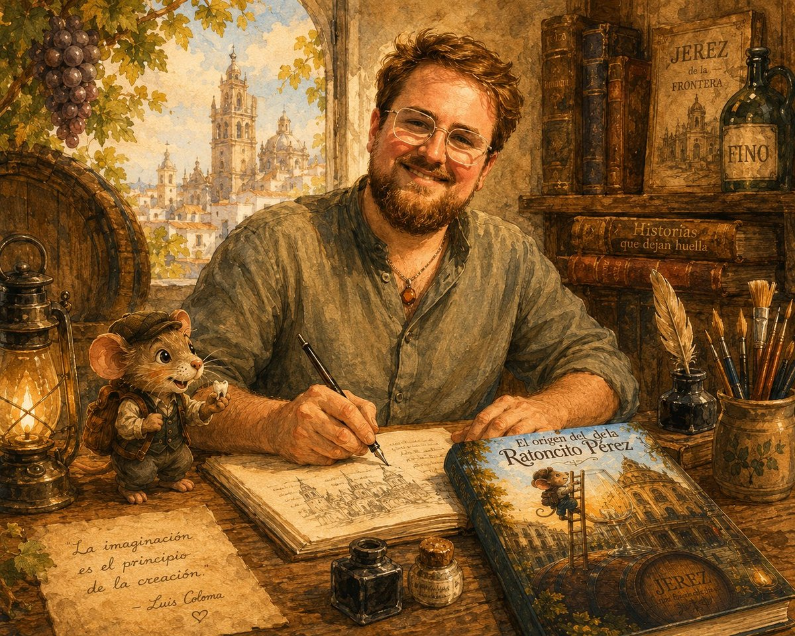

Stories that are born to stay.
I'm Juan Manuel Vela Vacas, a children's author. Here you'll find my stories, my characters and the worlds I create, one page at a time.
DISCOVER MY BOOKSGET TO KNOW MEMy books
Very different stories, born from imagination, tradition and those little things that deserve to become a story.

The Origin of the Tooth Fairy Mouse
Before becoming the world's most famous mouse, Pérez was just a little mouse living in Jerez.
ENTER THE STORY →
Jara, the Noble PPP
A story about love, respect and education. Because it is not about how she looks, but about the heart she has.
📖 Available only in Spanish
MEET JARA →Discover more about Pérez.
Where does he come from? How can he reach so many homes? And what secrets does his story hold?
Discover the origin, the tradition and the questions many children ask about the Tooth Fairy Mouse.
ABOUT THE ORIGIN OF PÉREZ →


The Origin of Santa Claus:
Saint Nicholas
A new story is taking shape. Before becoming the figure we all know, there was a man, a legend and a journey that would change everything.
Juan Manuel Vela Vacas' next story.
Saint Nicholas
A new story is about to begin...

Hello, I'm Juan Manuel.
I'm from Jerez and I love turning ideas, memories and little stories into tales that children and adults can enjoy together.
I'm inspired by tradition, animals and that special magic that appears when a story manages to stay in your memory.